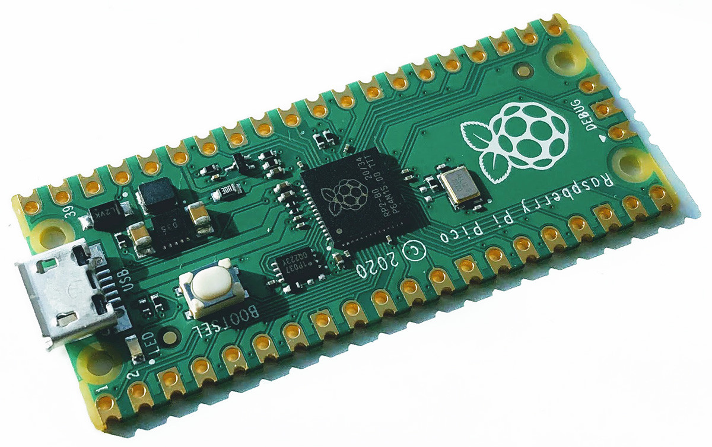
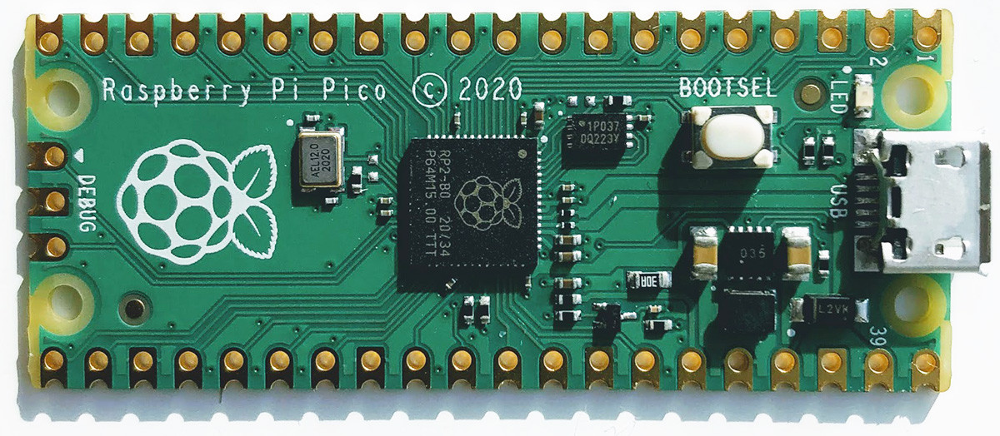
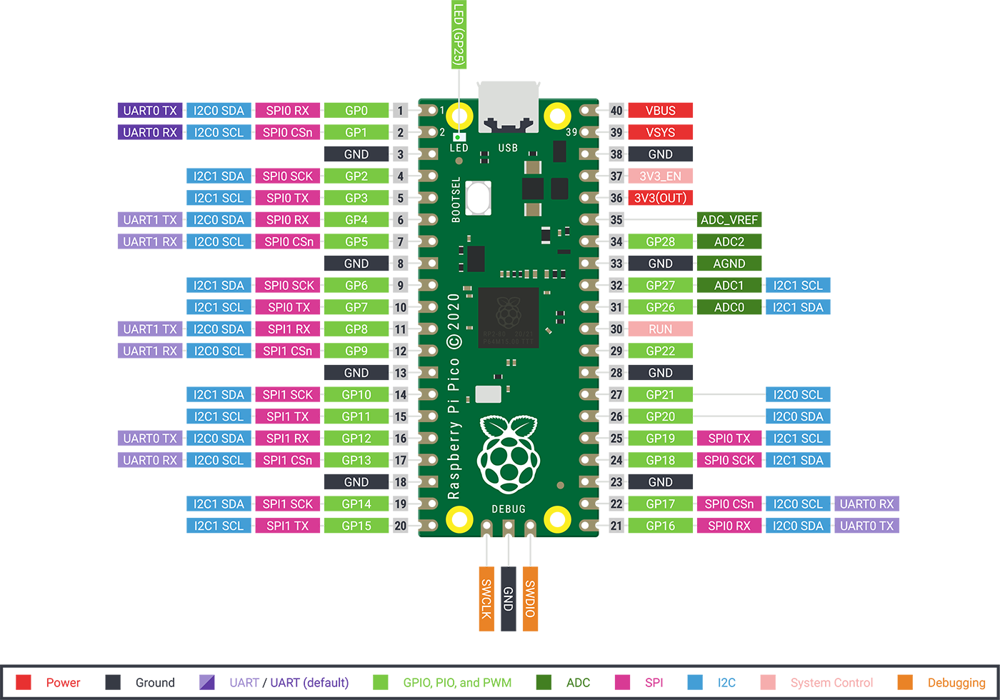
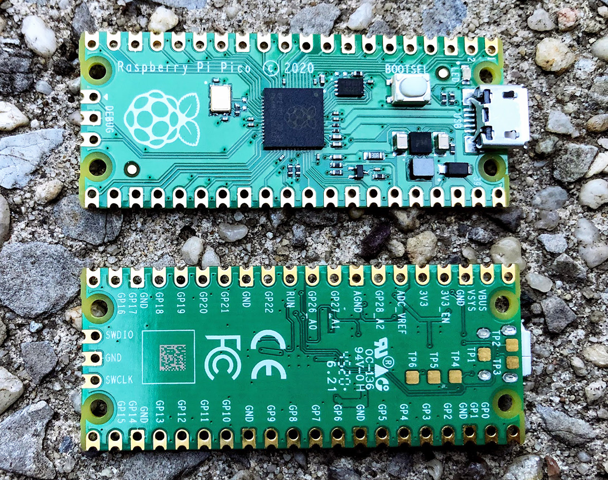
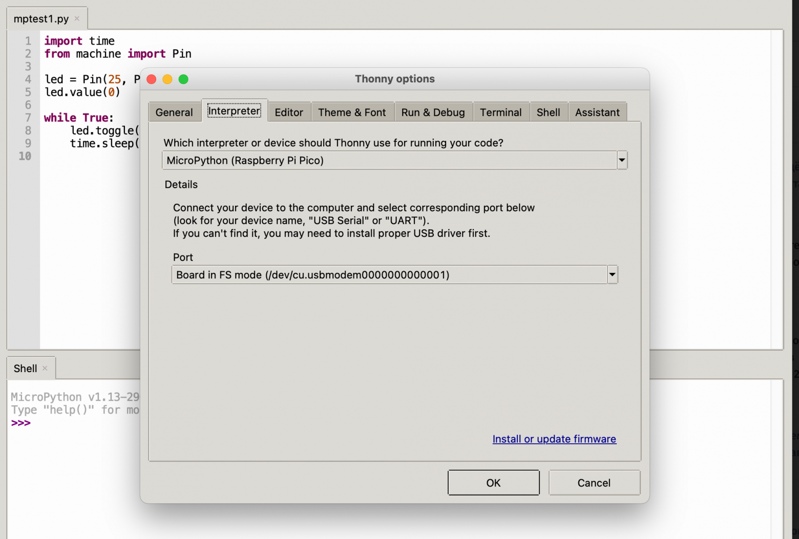

Raspberry Pi Pico на МК RP2040:
8 мин124K
DIY или Сделай самКомпьютерное железоПрограммирование микроконтроллеров*
Туториал
Raspberry Pi Foundation всегда знает чем порадовать или удивить нас, а так же как подталкивать других производителей на интересные шаги и решения для хорошей конкуренции.
В четверг (рыбный день, кстати) 21-ого января 2021 года был анонсирован выпуск нового микроконтроллера RP2040 и небольшой платы с его применением, которая получила название Raspberry Pi Pico.

Честно говоря, я прочитал эту новость и не планировал ничего делать по этому поводу. Но потом случайно заметил несколько особенностей этого микроконтроллера, что разбудило любопытство во мне и подтолкнуло к покупке пары плат для дальнейших экспериментов. Очень привлекло наличие PIO блоков и множество PWM. Справедливости ради, PWM можно как-то решить, а вот с PIO есть смысл поиграться.
После пары дней занимательной возни я решил поделиться своим небольшим опытом с Хабром и его гостями.
К сожалению, с PIO я недостаточно освоился и поэтому возможности PIO выходят за рамки этой статьи. Но если будет очень интересно сообществу, то возможно продолжение после того, как будет чем поделиться.
Введение
Raspberry Pi Pico является платой с микроконтроллером RP2040.
Надо помнить, что это не компьютер, на котором запущена взрослая ОС типа Linux, а именно микроконтроллер и поэтому цели применения у Pico отличаются от той же Raspberry Pi Zero и других старших продуктов семейства Raspberry Pi.
Приведу часть технических характеристик:
RP2040 декодируется как:
RP: Raspberry Pi
2: два ядра
0: ядра M0+
4: минимум 256 КБ памяти
0: нет встроенной флеш-памяти
PIO блоки дают возможность создавать свои интерфейсы. Например, можно запрограммировать интерфейс WS2812, добавить I2S, SDIO или VGA и т.п.
Ещё одна интересная штука: ядро Cortex-M0+ не содержит в себе блока вычислений с плавающей запятой. Обычно это эмулируется библиотеками GCC, но тут Raspberry Pi использует более быстрое оптимизированное решение от автора Qfplib, которое лицензировано для использования на RP2040.
Более подробный datasheet на плату Pico
Тут можно найти datasheet на сам RP2040
Плата
Немного о самой плате Raspberry Pi Pico.
Плата имеет удобный размер 21мм x 51мм. Есть даже отверстия для монтирования, чем может похвастаться не каждая похожая плата.
Можно припаять пины для использования с макеткой или запаять весь модуль поверхностным монтажом на другую плату.

На Pico стоит понижающий преобразователь на 3,3 Вольта. И это не просто линейный преобразователь, которые часто встречаются на недорогих аналогичных платах, а buck-boost SMPS на Richtek RT6150B. Благодаря этому входное питание платы может быть в пределах 1,8 — 5,5 Вольт.
Флеш-память W25Q16JV, хоть, и стоит внешняя, но перепаивать её будет не такой уж и тривиальной задачей, так как чип в корпусе USON-8 (мне лично точно не под силу).
Есть кнопка BOOTSEL и светодиод на GPIO25. Так же выведен SWD для отладки.
Кстати, можно использовать вторую плату Pico как отладчик по SWD.
Входы-выходы
На Raspberry Pi Pico выведено почти все входные-выходные пины (26 из 30). Официальная распиновка платы:

Некоторые пины задействованы для внутреннего применения:
GPIO23: выход для контроля энергосбережения SMPS. Можно регулировать пульсации за счёт изменения КПД преобразователя
GPIO24: вход для VBUS sense (1 если VBUS по MicroUSB подключен)
GPIO25: выход на светодиод, расположенный на плате
GPIO29: аналоговый вход для измерения VSYS/3
Сам USB порт дополнительно выведен на точки TP1, TP2 и TP3 внизу платы.

Разработка
На данный момент официально предлагаются следующие варианты для разработки под RP2040:
Варианты на Python'е имеют много своих ограничений, по большей части которые связаны с ограничением памяти микроконтроллера, но для многих быстрых прототипов на коленке этого должно хватить.
Попробую вкратце пройтись по каждому из этих подходов.
Постараюсь не особо заострять внимание на установку и конфигурацию для каждого способа, так как каждый из них потянет на отдельную статью. Вместо этого расскажу некоторые особенности и приведу примеры кода для них.
RP2040 имеет встроенный загрузчик, который поддерживает UF2 (разработка Microsoft) для загрузки бинарников. Это представляет из себя внешний USB накопитель, на который можно просто скопировать бинарник.
Когда я купил плату в магазине, то во флеш-памяти ничего не было и UF2 активировался автоматически при подключении по USB. Когда программа записана на флеш-памяти, то UF2 режим можно активировать удерживанием кнопки BOOTSEL при подачи питания по USB. Появится накопитель «RPI-RP2», который можно использовать для копирования бинарных файлов uf2.
Для отладки можно использовать SWD. Если нет подходящего отладчика, то можно использовать ещё одну плату Pico с прошитым отладчиком.
Как более простой вариант Pico может выводить данные стандартного вывода на UART или прикидываться USB CDC и выводить в обычный терминал типа PuTTY, minicom или аналогичный с параметрами по-умолчанию 115200 8n1.
C/C++ с Pico SDK
Пожалуй, этот подход получит максимальное использования «железа» на данный момент.
Raspberry Pi опубликовали неплохую документация на данную тему, с которой можно ознакомиться тут.
В своё время для ESP8266 мне пришлось пройти достаточно длинный квест для установки и настройки SDK. Но первоначальная установка окружения для RP2040 мне показалась намного более простой и удобной.
В оригинальном документе достаточно подробно описаны шаги для установки SDK на Linux, macOS и Windows.
Вариант с разработкой на Raspberry Pi 4B или 400 с Linux будет самым простым, так как есть скрипты, которые сделают первоначальную конфигурацию (даже установку Visual Studio Code):
git clone https://github.com/raspberrypi/pico-setup.git
pico-setup/pico_setup.sh
У меня все Raspberry Pi 4 оказались в каких-то своих тёмных делах, да и как-то привычнее разрабатывать на более удобных компах. По этой причине был выбран путь установки окружения вручную. Тем более, это оказалось не таким уж и сложным.
Весь процесс начальной подготовки сводится к следующим шагам (в данном случае шаги выполнялись на macOS и Linux):
# Создать общую директорию для всего:
mkdir pico && cd pico
# Забрать Pico SDK:
git clone --recursive https://github.com/raspberrypi/pico-sdk.git
# Забрать примеры:
git clone https://github.com/raspberrypi/pico-examples.git
# Linux: установить необходимые инструменты для сборки через "apt":
apt update && apt install cmake gcc-arm-none-eabi build-essential
# OSX: установить инструменты используя "brew" (список может немного меняться в зависимости от текущих установленных пакетов):
# (gcc-arm-embedded будет установлен в /usr/local/bin. Эта информация нужна будет при конфигурировании Visual Studio Code)
brew install cmake gcc-arm-embedded
# Настроить переменную PICO_SDK_PATH (можно занести значение во что-то типа .profile по вкусу):
export PICO_SDK_PATH=`pwd`/pico-sdk
Пример кода для мигания светодиодом с использованием Pico SDK:
#include "pico/stdlib.h"
int main() {
// Конфигурация пина со светодиодом
const uint LED_PIN = 25;
gpio_init(LED_PIN);
gpio_set_dir(LED_PIN, GPIO_OUT);
// Наш рабочий бесконечный цикл
while (true) {
// Переключить светодиод
gpio_put(LED_PIN, 1);
sleep_ms(250);
gpio_put(LED_PIN, 0);
sleep_ms(250);
}
}
Можно попробовать собрать эту мигалку из примеров:
cd pico-examples
mkdir build
cd build
cmake ..
cd blink
make -j8
Если всё прошло без ошибок, то в результате мы получим файлы, среди которых будет blink.uf2. Этот файл можно скопировать на Pico в режиме UF2 (надо удерживать кнопку BOOTSEL во время подачи питания по USB).
После копирования Pico автоматически перезагрузится и можно наслаждаться «hello world» на микроконтроллере.
В «pico-examples» есть достаточно много интересных примеров. В том числе и примеры с использованием PIO. Выглядит очень интересно. Возможно, расскажу об этом потом, но надо самому разобраться для начала.
Для создания начального шаблона для своего проекта есть инструмент от Raspberry Pi.
Он создаёт шаблоны под Pico SDK, Visual Studio и добавляет поддержку разных библиотек на разную периферию.
CircuitPython
Я много слышал про MicroPython и CircuitPython, но никогда не сталкивался. А тут появилась хорошая возможность пощупать.
CircuitPython является форком MicroPython, но со своими плюшками. Пожалуй, самая заметная плюшка в том, что CircuitPython создаёт USB флешку со своей файловой системой, где можно напрямую редактировать скрипты на Python'е в своём любимом IDE. При любой записи изменённого скрипта происходит автоматический перезапуск платы и выполнение кода.
В терминале можно видеть результат или запустить интерактивный режим для выполнения команд в нём, что тоже помогает в отладке.
Установка CircuitPython достаточно проста:
После этого из системы уйдёт RPI-RP2 и вместо него появится новый накопитель CIRCUITPY. На этом новом накопители должен быть файл code.py, с которого начинается выполнение кода. Так же там будет пустая директория «lib», куда можно добавлять сторонние и свои библиотеки.
Файл code.py можно изменять прямо на этом накопителе в своём любимом редакторе. Adafruit советует использовать свой MU Editor, но у меня он зависает при запуске. Наверно, это даже к лучшему, так как я всё равно пользовался бы чем-то другим.
Так же доступна консоль на последовательном порту с параметрами 115200 8n1. При подключении можно получить доступ к интерактивному Python'у и выводу в консоль через «print» в скриптах.
Наша мигалка на CircuitPyhon будет выглядеть примерно так:
import board
import time
from digitalio import DigitalInOut, Direction
# Конфигурация пина со светодиодом
led = DigitalInOut(board.LED)
led.direction = Direction.OUTPUT
# Наш рабочий бесконечный цикл
while True:
# Переключить светодиод
led.value = not led.value
time.sleep(1)
Adafruit предлагает достаточно большой набор библиотек для работы с разным оборудованием.
Можно скачать .zip архив со всеми официальными доступными библиотеками для CircuitPython на circuitpython.org/libraries
Рекомендуется забирать .mpy версию. Это готовый байт-код, который откомпилирован под нужную версию CircuitPython.
MicroPython
MicroPython и CircuitPython достаточно близки друг к другу, но с некоторыми особенностями для отладки и API.
Установка MicroPython тоже достаточно проста:
На этот раз RPI-RP2 уходит, но новый накопитель не появляется. Можно подключиться терминалом на только что появившийся порт (115200 8n1), по которому будет доступна интерактивная консоль Python'а.
Для работы с кодом предполагается использование Thonny (возможно, есть и другие варианты). Это минималистичный IDE, который может редактировать код напрямую на плате микроконтроллера.
Скачать Thonny можно тут
После установки Thonny в настройках надо подключить Pico. Это сделать можно через меню Tools — Options, потом в закладке «Interpreter» выбрать «MicroPython (Raspberry Pi Pico)» в поле «Which interpreter or device», а в поле «Port» выбрать порт, на котором подключена плата Pico.

Настройку лучше выполнять при подключенной Pico, что бы Thonny мог найти нужный порт.
Пример для мигания на MicroPython:
import time
from machine import Pin
# Конфигурация пина со светодиодом
led = Pin(25, Pin.OUT)
led.value(0)
# Наш рабочий бесконечный цикл
while True:
# Переключить светодиод
led.toggle()
time.sleep(1)
Выводы (на этот раз не контроллера)
На мой взгляд для такого свежего и нового микроконтроллера уже есть достаточно инструментов для начала экспериментов.
Уверен, что фанатам Arduino не придётся долго ждать когда Pico будет портирован на их любимую платформу. Зато пока есть хороший повод поиграться с Python'ом.
PIO выглядит очень интересной фишкой и я надеюсь заняться этим плотнее по мере появления свободного времени.
Ещё недавно я наткнулся на TensorFlow Lite Micro для Pico для запуска моделей машинного обучения.
В целом, я очень рад за новый продукт в линейке Raspberry Pi и надеюсь, что ему предстоит много приятных приключений и открытий в нашем мире.
Некоторые компании уже объявили о выходе своих плат на этом микроконтроллере (в том числе и с беспроводным интерфейсом), что должно дать больше возможностей.
Теги:
Хабы:
+43142